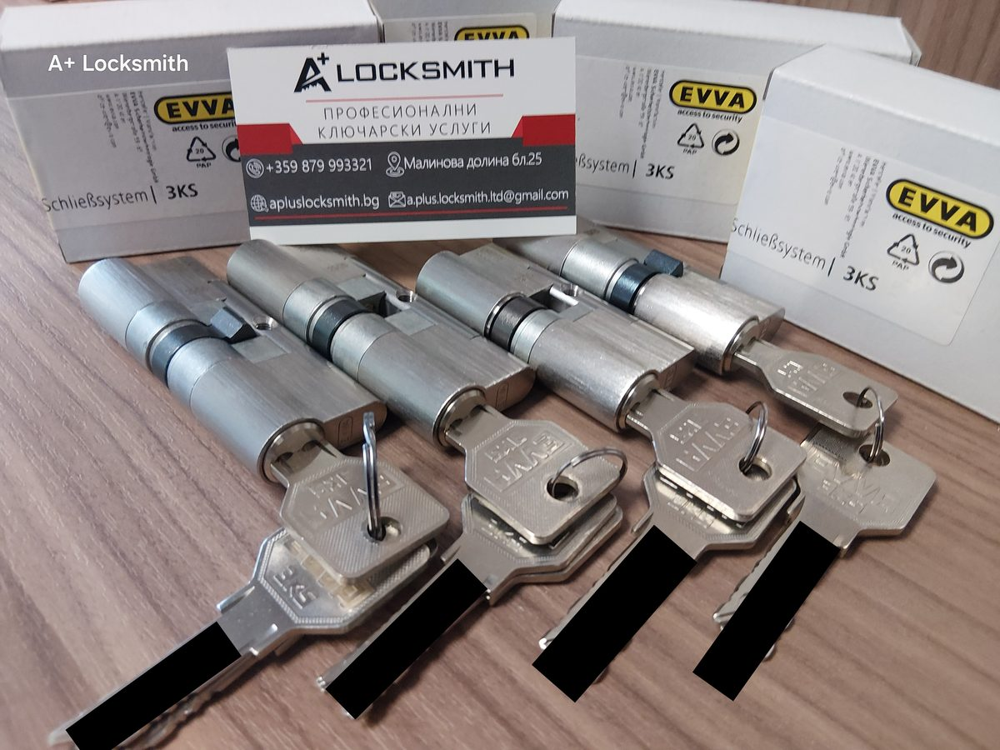

EVVA 3KS — какво прави този патрон различен от фабричния на вратата ви
Всеки патрон изглежда като парче месинг с дупка за ключ. Разликата между този за 30 лева и този за няколко пъти повече не се вижда отвън — тя е в това колко време, шум и умение трябват, за да бъде преодолян.

Накратко: EVVA 3KS е австрийска система на трите криви, при която 12 масивни щифта се движат без пружини, водени от криви, изфрезовани върху самия ключ. При едно отключване ключът се проверява четири пъти вместо веднъж, а дубликат се изработва само от оторизиран партньор срещу оригинална карта за сигурност. Това е другото ниво спрямо патрона, който е дошъл в комплект с вратата.
Как работи системата на трите криви
При обикновения патрон ключът има зъбци, които повдигат подпружинени щифтове до една линия. Ако щифтовете се подредят — ключът се върти. Цялата проверка е една, в един момент, в една точка.
При 3KS ключът няма зъбци, а криви, изфрезовани върху плоскостта му. Докато влиза, тези криви водят 12 масивни щифта до точно определени позиции. Две контролни планки сканират резултата, а допълнителна планка в сърцевината проверява и профила на ключа. Ключът трябва да е верен в няколко отделни измерения едновременно.
Защо липсата на пружини е най-важното
Повечето техники за отваряне разчитат точно на пружините. При бъмпинг се удря специален ключ и подпружинените щифтове за миг отскачат на линия. При шперцоване се натиска щифт по щифт и се усеща кога някой е „седнал“ — пак благодарение на пружината, която го връща.
В 3KS няма пружини. Щифтовете не се връщат сами и не отскачат — те стоят там, където ги е оставил ключът. Няма какво да бъде почувствано и няма какво да отскочи. Това е и причината системата да е изключително износоустойчива: няма пружина, която да отслабне след десет години ежедневно ползване.
Четири проверки вместо една
При завъртането ключът на 3KS се проверява общо четири пъти — три повече, отколкото при класическите системи. Това не е маркетинг, а право следствие от конструкцията: криви, контролни планки и профил се четат на различни етапи от движението. За да се преодолее такъв патрон, трябва да се „познаят“ всички тези проверки едновременно, а не последователно, както при обикновения патрон.
Какво спира физическата атака
Фините техники са само половината от картината. Повечето реални взломове у нас минават през груба сила върху патрона — счупване, издърпване, разпробиване. 3KS е построен с това наум:
- Твърдосплавни елементи срещу разпробиване в сърцевината и корпуса — свредлото се плъзга, вместо да напредва.
- Защита срещу издърпване чрез твърдосплавна странична планка и модулната конструкция на корпуса.
- Модулен строеж — дължината се подбира за конкретната врата, така че патронът да не стърчи и да не предлага за какво да бъде хванат.
Тук идва и най-честата грешка: скъп патрон, монтиран без бронировка и с грешен размер. Как изглежда това на практика сме описали в случая от Малинова долина, а след реален взлом — в ъпгрейда с EVVA MCS и бронировка.
Трите нива на защита на ключа от копиране
Най-подценяваният риск не е взломът, а копието. Ключ, който всеки може да пресече за десет лева, прави останалата сигурност условна. При 3KS защитата стои на три крака:
- Организационна — ключ се изработва само срещу картата за сигурност, която остава у собственика.
- Техническа — профилът и кривите изискват специализирани машини, с каквито обикновената работилница не разполага.
- Правна — ключът и профилът са защитени, а неоторизираното им произвеждане е нарушение, не сива зона.
Трите се подсилват взаимно. Именно затова изработката на допълнителен ключ при EVVA е неудобна — и точно това неудобство ви пази.
3KS срещу обикновения фабричен патрон
| Какво | Фабричен патрон | EVVA 3KS |
|---|---|---|
| Механизъм | Подпружинени щифтове, една проверка | 12 щифта без пружини, четири проверки |
| Бъмпинг | Уязвим | Методът не работи — няма пружини |
| Шперцоване | Въпрос на минути за опитна ръка | Висока устойчивост по конструкция |
| Разпробиване | Обикновена стомана | Твърдосплавни елементи |
| Копиране на ключ | Свободно, във всяка будка | Само с карта за сигурност, от оторизиран партньор |
| Комбинации | Ограничен брой, повторения са обичайни | Милиарди комбинации — вашата е уникална |
| Износване | Отслабващи пружини, засичане с годините | Без пружини, плавен ход дълги години |
Обръщаемият ключ и ежедневието
Дребна подробност, която се оценява най-бързо: ключът на 3KS е обръщаем — влиза и по двата начина, със заоблен връх, който сам се центрира. С торба в едната ръка и в тъмното това спестява повече нерви, отколкото звучи. Плавният ход без пружинно съпротивление е другата част от усещането — и е показател, че механизмът е в добро състояние, не просто каприз.
Кога 3KS не е правилният избор
Не продаваме патрон на всеки, който влезе. Има случаи, в които парите са по-добре вложени другаде:
- Когато вратата е слабото звено. Патрон от висок клас на врата, която се отваря с ритник или с лост при касата, не решава нищо.
- Когато няма бюджет за бронировка. По-разумно е патрон от среден клас с бронировка, отколкото висок клас без нея.
- Когато ви трябват много ключове и често. Ако всеки месец се раздава по нов ключ, строгата процедура с карта ще ви пречи. Тогава по-скоро говорим за система с временен достъп — вижте как работи функцията TAF.
- Когато вратата е второстепенна — мазе, склад, стопанска постройка без ценности вътре.
Честната уговорка за „непробиваемия“ патрон
В интернет ще прочетете, че такъв патрон е невъзможно да бъде отворен, счупен или пробит. Това не е вярно за нито един патрон. Всяка механична система може да бъде преодоляна, ако някой разполага с достатъчно време, инструменти, умения и мотивация.
Разликата е друга и е по-важна: при патрон от висок клас атаката става бавна, шумна и изискваща подготовка, която обикновеният извършител нито има, нито му е сметка да придобие. Взломовете у нас се случват там, където е лесно. Сигурността е въпрос на това вашата врата да не бъде лесният вариант.
Ако не сте сигурни какъв патрон стои на вратата ви в момента, започнете с какво представляват слабите фабрични патрони и с признаците, че патронът ви умира. Ако нещо от описаното ви звучи познато — обадете се.
Често задавани въпроси
Какво означава „система на трите криви“ при EVVA 3KS?
Върху ключа на 3KS са изфрезовани криви вместо класическите зъбци. Те водят 12 масивни щифта в патрона до точно определени позиции, където две контролни планки проверяват дали всичко съвпада. Оттам идва и името — 3KS, система на трите криви.
Може ли ключ EVVA 3KS да се копира в железария?
Не. Изработката на ключ минава само през оторизиран партньор на EVVA и само срещу оригиналната карта за сигурност, която получавате с патрона. Без карта никой — включително ключар — не може да ви направи дубликат. Това е и най-подценяваната част от сигурността на един патрон.
Устойчив ли е EVVA 3KS на бъмпинг?
Да. Бъмпингът разчита на това, че подпружинените щифтове отскачат при удар и за миг се подреждат. В 3KS няма пружини — щифтовете се движат само когато ключ ги води по кривите си. Няма какво да отскочи, затова методът не работи срещу тази система.
Нужна ли е бронировка, ако патронът е EVVA 3KS?
В повечето случаи — да. Качественият патрон се защитава срещу шперцоване, разпробиване и издърпване, но ако стърчи извън челото на вратата, остава изложен на груба физическа атака. Бронировката поема точно този удар и работи заедно с патрона, не вместо него.
Може ли да се смени само патронът, без да се сменя цялата брава?
Да. Патронът е стандартизиран елемент и се подменя самостоятелно, без да се засяга останалата брава или самата врата. При нормална ситуация смяната отнема под час.
Ще стане ли EVVA 3KS на врата по български стандарт?
Да. Патронът е с модулна конструкция и дължините се подбират за конкретната врата, включително за по-дебели български врати. Точните размери се вземат при оглед — патрон с грешна дължина е проблем за сигурността, независимо колко добър е механизмът вътре.
Колко време отнема изработката на допълнителен ключ?
Това не е услуга за изчакване на място. Ключът се поръчва от оторизиран партньор срещу картата за сигурност и се изработва на завода. Именно тази неудобна стъпка е причината ключът ви да не може да бъде копиран зад гърба ви.
Каква е разликата между 3KS и 3KS plus?
3KS plus е доразвитата версия на системата, с променена форма на кривите в края на ключа и повече възможни комбинации. И двете работят на един принцип — без пружини, с проверка на ключа в няколко позиции. Кое от двете е подходящо, зависи от това дали патронът влиза в съществуваща система.
Наистина ли такъв патрон е непробиваем?
Не. Непробиваем патрон не съществува и всеки, който твърди обратното, продава, а не обяснява. Разликата е, че преодоляването на патрон от висок клас изисква време, шум, специални инструменти и умения — комбинация, която обикновеният извършител няма и не търси. Сигурността е въпрос на това атаката да не си струва.
Имате подобен случай?
Обадете се за оглед или консултация — работим в София с посещение на адрес.